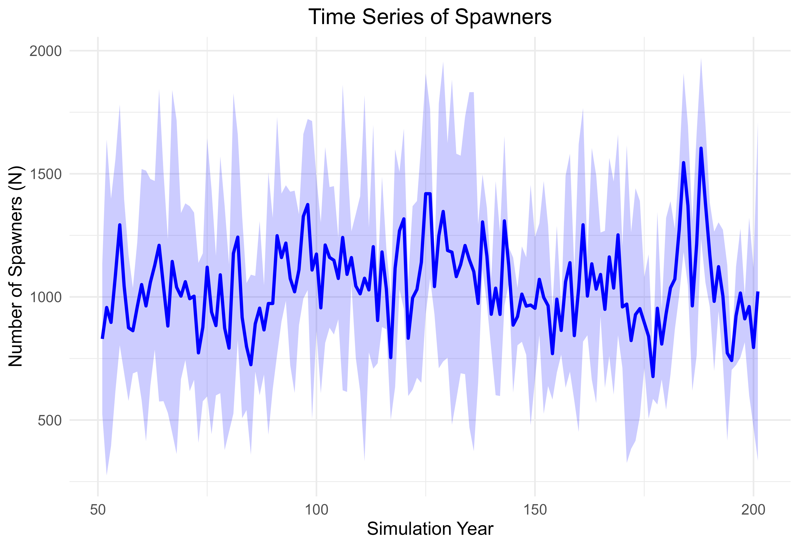

6. Population Model Evaluation
2026-01-06
Source:vignettes/a06-population-model-sensitivity.Rmd
a06-population-model-sensitivity.RmdOverview
We can compare the sensitivity of parameters within the population model. This is useful to understand parameters that are more or less sensitive to perturbations. In this example we will swap out different life cycle profiles for populations of Chinook Salmon and see how the sensitivity of input parameters changes our results. We will use stressor-response and stressor-magnitude values from for Nanaimo River Chinook salmon, but we will swap out the life cycle profile data for the following populations:
- Nanaimo River Summer Chinook (vital rates from DFO-RAMs).
- Chehalis River Spring/Fall Chinook in coastal Washington (using parameters published from Beechie et al., 2021).
- Columbia River Chinook from Wenatchee River (using parameters from Honea et al., 2009: Freshwater Biology).
- Nicola River spring-run Chinook from the interior of BC (DFO-RAMs 2021).
Load Input Data
In this example we will load the stressor-response, stressor
magnitude file and life cycles file. The polygon geometry is not needed
to run the population model. Reset filename_ to point to a
local file on your computer. We will load the Nanaimo River Chinook
salmon data as a starting point.
library(CEMPRA)
# Stressor Magnitude
fname <- system.file("extdata/nanaimo/stressor_magnitude_nanaimo.xlsx", package = "CEMPRA")
dose <- StressorMagnitudeWorkbook(filename = fname)
dose$SD <- 0
# Stressor Response
fname <- system.file("extdata/nanaimo/stressor_response_nanaimo.xlsx", package = "CEMPRA")
sr_wb_dat <- StressorResponseWorkbook(filename = fname)
# Load location and habitat capacities
filename <- system.file("extdata/nanaimo/habitat_capacities_nanaimo.csv", package = "CEMPRA")
habitat_capcities <- read.csv(filename, stringsAsFactors = FALSE)
# Load the life cycle parameters
filename_lc <- system.file("extdata/nanaimo/species_profiles/nanaimo_comp_ocean_summer.csv", package = "CEMPRA")
life_cycle_params <- read.csv(filename_lc)
Target Populations
The following habitat capacities files lists the target populations. The density-dependent constraints esimtate capacities in the absence of any stressors and assume that 100% of the stream area is suitable for spawning (e.g., gravel coverage = 100% and spawning suitability = 100%). We have specific stressors targetting capacities that will shink these numbers down to more realistic estimates.
- Lower Nanaimo River Fall-Run Chinook
- Lower Nanaimo River Summer-Run Chinook
- Upper Nanaimo River Spring/Summer-Run Chinook
print(habitat_capcities)
#> HUC_ID NAME k_stage_0_mean k_stage_Pb_1_mean k_stage_B_mean
#> 1 1 Fall Lower 627594 NA 38073
#> 2 2 Summer - Lower 1247555 NA 15384
#> 3 3 Summer - Upper 913589 NA 20943
# Focus analysis on the Lower Nanaimo River Summer-Run Chinook (1)
HUC_ID <- 2Run the Population Model
Next, we can run the population model for a number of years
n_years and batch replicates MC_sims.
data <- PopulationModel_Run(
dose = dose,
sr_wb_dat = sr_wb_dat,
life_cycle_params = life_cycle_params,
HUC_ID = 2, # Lower Summer-run Chinook
n_years = 200, # run for 200 years
MC_sims = 5, # batch replicates
habitat_dd_k = habitat_capcities # Population-specific carrying capacities
)
# Model returns object with all data nested in a list object
names(data)
#> [1] "ce" "baseline" "MC_sims"
# ce = with cumulative effect stressors
# 5 batch replicates
length(data$ce)
#> [1] 5
# Look at replicate 2 of 5
names(data$ce[[2]])
#> [1] "pop" "N" "lambdas" "info"
# We want to review the N object that contains the population abundance in each stage class
tail(round(data$ce[[2]]$N, 0))
#> K1 K2 K3 K4 K5 K6 K7
#> [196,] 19698 2660 382 732 84 984 95
#> [197,] 71512 335 1480 134 339 185 603
#> [198,] 50142 3531 170 452 37 618 108
#> [199,] 54265 3497 2082 55 454 73 352
#> [200,] 58136 2445 1681 676 378 917 44
#> [201,] 67526 1613 1368 595 308 806 530Visualize the Time Series Projections
Simple plots can be included to visualize trends
spawners <- pop_model_get_spawners(data = data,
life_stage = "spawners",
life_cycle_params = life_cycle_params)
head(spawners)
#> location_id rep_id year spawners
#> 1 2 1 1 15384
#> 2 2 1 2 1649
#> 3 2 1 3 2277
#> 4 2 1 4 1759
#> 5 2 1 5 1663
#> 6 2 1 6 1134
library(dplyr)
#> Warning: package 'dplyr' was built under R version 4.5.2
#>
#> Attaching package: 'dplyr'
#> The following objects are masked from 'package:stats':
#>
#> filter, lag
#> The following objects are masked from 'package:base':
#>
#> intersect, setdiff, setequal, union
summary_data <- spawners %>%
filter(year > 50) %>%
group_by(location_id, year) %>%
summarize(
mean_spawners = mean(spawners),
sd_spawners = sd(spawners),
.groups = 'drop'
)
head(summary_data)
#> # A tibble: 6 × 4
#> location_id year mean_spawners sd_spawners
#> <dbl> <int> <dbl> <dbl>
#> 1 2 51 830. 305.
#> 2 2 52 957 682.
#> 3 2 53 897. 502.
#> 4 2 54 1088 471.
#> 5 2 55 1293. 489.
#> 6 2 56 1044. 353.
library(ggplot2)
#> Warning: package 'ggplot2' was built under R version 4.5.2
# Create the ggplot
ggplot(summary_data, aes(x = year, y = mean_spawners, group = location_id)) +
geom_line(color = "blue", size = 1) + # Line for mean spawners
geom_ribbon(
aes(ymin = mean_spawners - sd_spawners, ymax = mean_spawners + sd_spawners),
fill = "blue",
alpha = 0.2
) + # Shading for ±1 standard deviation
labs(title = "Time Series of Spawners", x = "Simulation Year", y = "Number of Spawners (N)") +
theme_minimal() +
theme(plot.title = element_text(hjust = 0.5), text = element_text(size = 12))
#> Warning: Using `size` aesthetic for lines was deprecated in ggplot2 3.4.0.
#> ℹ Please use `linewidth` instead.
#> This warning is displayed once every 8 hours.
#> Call `lifecycle::last_lifecycle_warnings()` to see where this warning was
#> generated.